Patients, séances, dossier médical, stock, facturation, greffe rénale — et un tableau de bord de direction en temps réel pour piloter tous vos centres et décider sur des chiffres fiables.
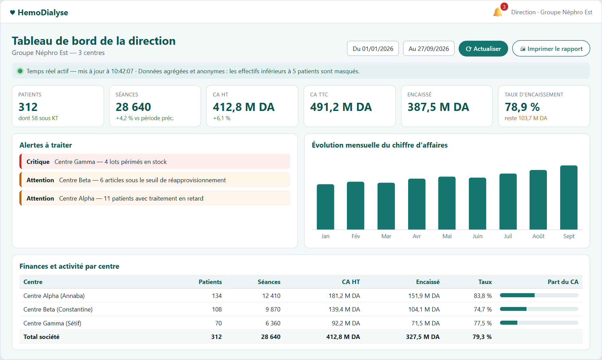
Dossiers papier, tableurs, stock suivi à la main, facturation en fin de mois, traitements oubliés : chaque ressaisie est une source d'erreur, chaque oubli a un coût pour le patient et pour le centre.
Les équipes ressaisissent les mêmes données dans plusieurs outils et documents.
Doses d'EPO manquantes, PEC expirées, lots périmés : trop tard quand on s'en aperçoit.
Comparer les centres, suivre l'encaissement et la qualité des soins demande des consolidations manuelles, toujours en retard.
HemoDialyse relie tous les métiers du centre autour d'un même dossier patient : ce qui est saisi une fois est réutilisé partout.
Activité, chiffre d'affaires, encaissement, qualité des soins et stock de tous vos centres, comparés côte à côte. Vous voyez où agir avant que le problème ne se voie dans les résultats.
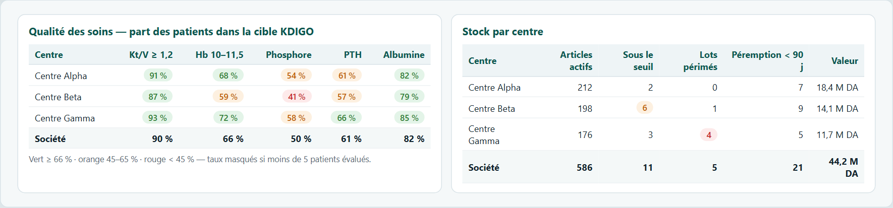
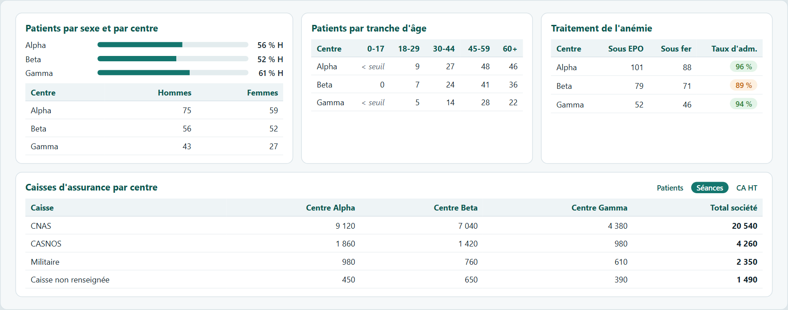
Part des patients dans la cible (Kt/V, Hb, phosphore, PTH, albumine) en couleurs : repérez le centre qui décroche.
Patients par sexe et âge, séances et CA HT par caisse d'assurance, traitement de l'anémie par centre.
Données agrégées et anonymes : aucun dossier patient n'est accessible, les petits effectifs sont masqués.
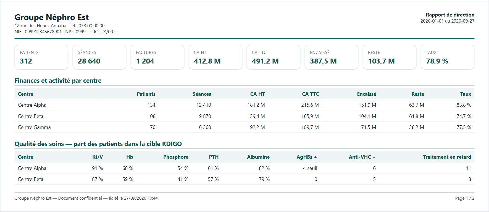
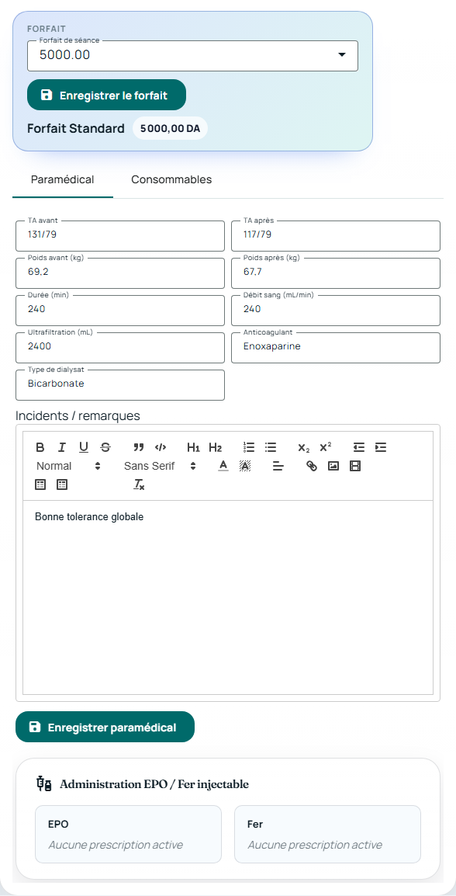
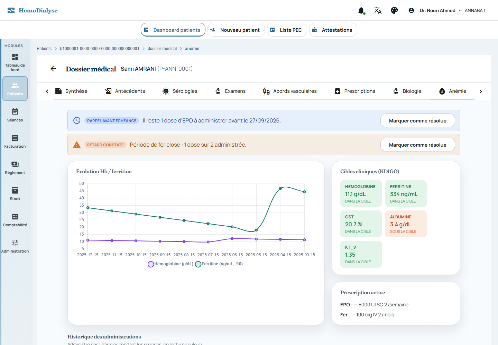
Ce que le médecin prescrit est ce que l'infirmier administre, et le système le vérifie pour vous.
La greffe est le meilleur avenir pour beaucoup de patients dialysés. Vos données servent enfin à la préparer.
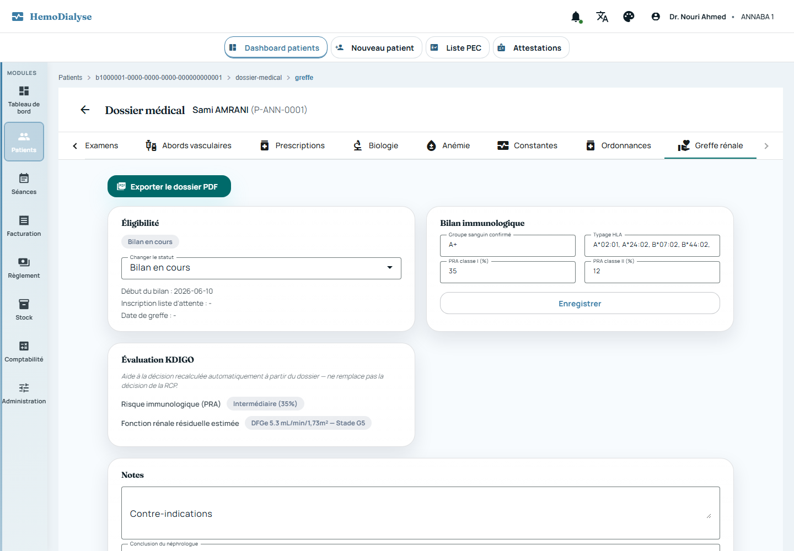
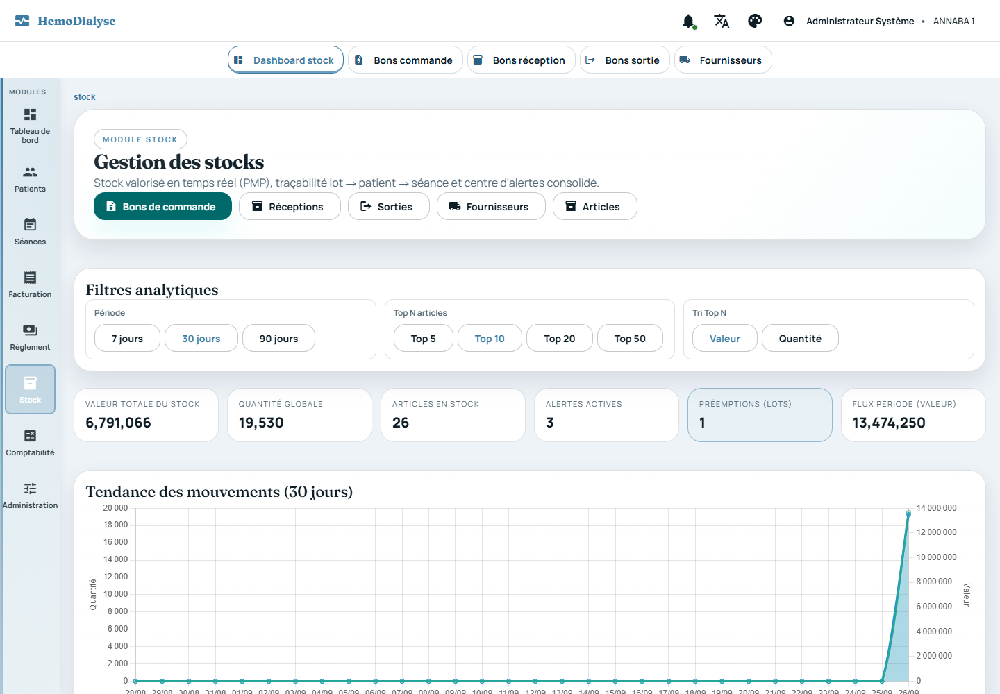
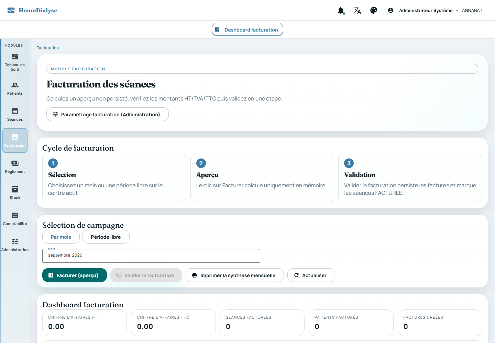
Valorisation au PMP, alertes de seuil et de péremption, sorties FEFO.
Lot → patient → séance, pour toute consommation.
Aperçu avant validation, HT / TVA / TTC, règlements et journal comptable SCF.
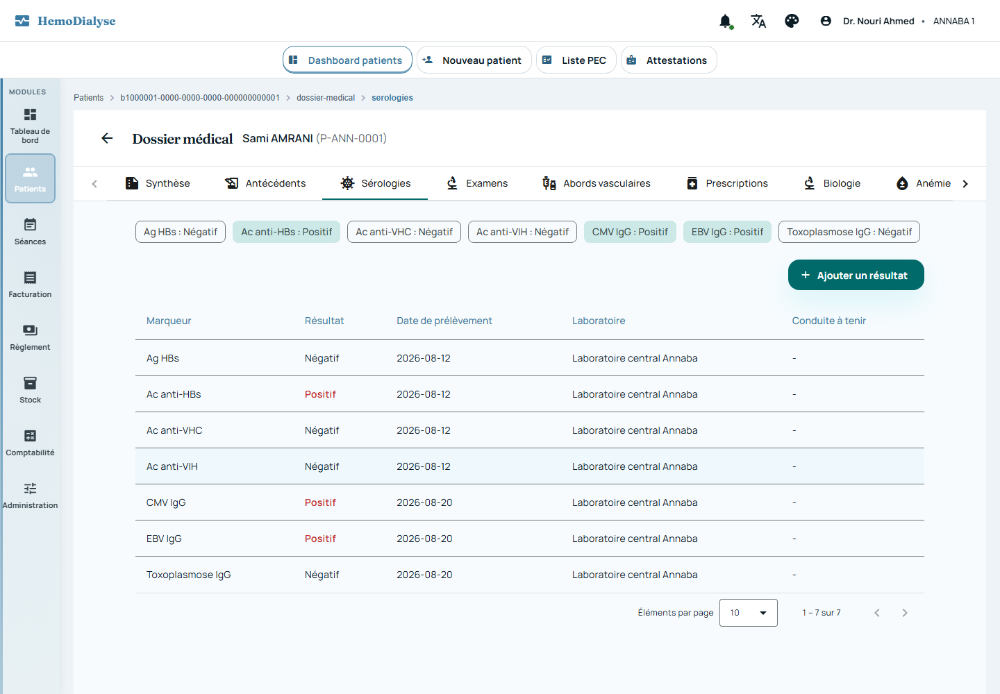
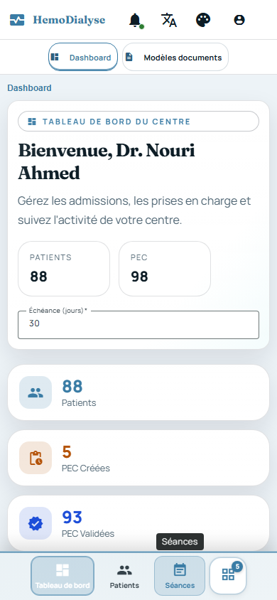
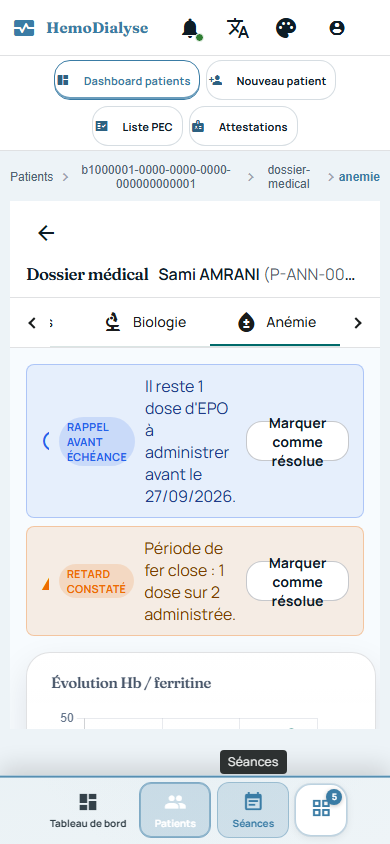
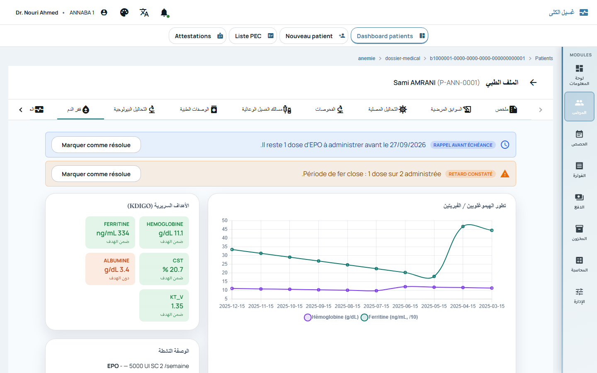
Chaque centre ses données, ses utilisateurs, son paramétrage ; une société pour les fédérer et une direction pour les piloter.
Français, arabe (droite à gauche), kabyle, anglais.
Une interface qui s'adapte à chaque écran.
Une démonstration sur vos propres cas d'usage, sans engagement.
Les captures d'écran présentées proviennent d'un environnement de démonstration ; les noms de patients et certaines données cliniques sont fictifs. Document non contractuel.